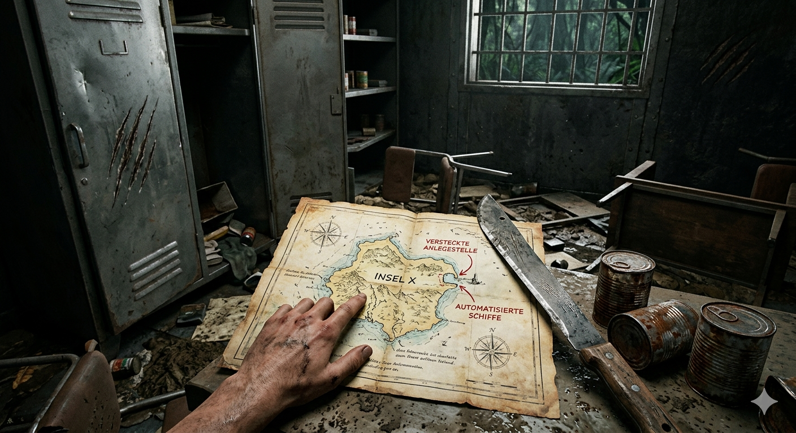

Du schnappst dir den schreienden Affen, springst in einen alten Spind aus Metall und ziehst die Tür lautlos zu. Nur Sekunden später bricht der wütende Tiger in den Raum ein. Es verwüstet die Einrichtung, wirft Stühle um und schnaubt wild vor Wut. Nach einigen quälend langen Minuten verliert er das Interesse und trottet wieder in den Wald.
Als du erleichtert aus dem Spind kletterst, bemerkst du eine alte Seekarte, die durch das Chaos aus einem Regal gefallen ist. Sie zeigt einen geheimen Steg auf der anderen Seite der Insel, an dem automatisierte Versorgungsschiffe anlegen! Mit den gefundenen Konserven, der scharfen Machete und der Karte bist du nun bestens gerüstet, um die Insel aus eigener Kraft zu verlassen.